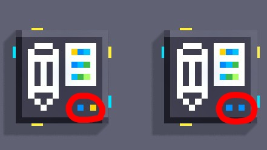
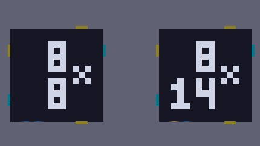
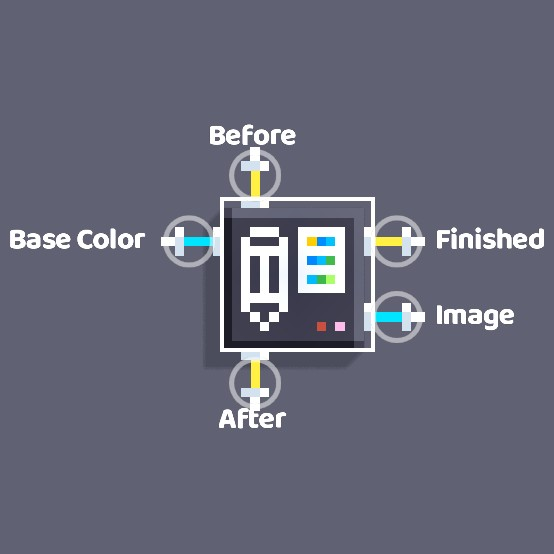

Scripts:
En el kit están incluidas 2 variantes de los scripts.
Se encuentran separadas por que se diseñaron para un tamaño específico de imagen.
Para distinguir uno de otro, hay 2 pixeles de colores que representan las dimensiones
de la imagen que procesan y un dibujo en la parte posterior.


Los scripts que contiene el kit son:- Image Editor UI: Abre el editor de pixel art y cuando se termina de dibujar, devuelve una lista con la imagen. Puede recibir de entrada un color de fondo predeterminado.

La lista "Image" que devuelve tiene tantos elementos como pixeles la imagen (contando los transparentes) + 8 variables de la paleta de colores. - Image To String: Permite convertir una lista de imagen en una mas óptima para guardar y cargar datos.

Su única salida es la lista "String" que tiene un tamaño 16 para imágenes de 8x14 y tamaño 10 para imágenes de 8x8. - String To Image: Hace exactamente lo mismo que Image To String pero al revés, devolviendo una lista "Image"

- Save String 1/2/3/..: Guarda cada elemento de una lista de string en una variable de guardado y tiene una variante por cada posible slot de la imagen.


- Load String 1/2/3..: Carga cada variable de guardado de su slot correspondiente en una lista "String" que devuelve como salida.

- Image To Object: A partir de una lista image, construye un pixel art que sigue a un unico pivote. Este script te devuelve tanto el object que representa al pivote, como una list con los pixeles de la imagen

El tamaño de la lista de pixeles, es el mismo que el de la lista de entrada, pero restandole los 8 espacios que ocupa la paleta de colores. - Update Pos: Este script, a partir de un pivote válido otorgado por Image To OBject, actualiza la posición y rotación de la lista de pixeles para seguir a las del pivote.